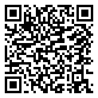

🔵 5ème · Période 1 · Révision
Révision : Séquence 2
Évolution des objets techniques : Les notions clés à retenir
🔗 Lien direct vers cette page

52R
Scanne le QR code, ou saisis ce code sur la page d'accès direct du site.
https://lyceefrancaisdetananarive.github.io/technologie/go.html?c=52R
📖 Vocabulaire essentiel
| Mot | Définition |
|---|---|
| Innovation | Amélioration significative d'un objet existant (nouvelle fonctionnalité, meilleure performance). |
| Invention | Création d'un objet ou concept totalement nouveau. |
| Rupture technologique | Changement radical qui transforme la société (ex : machine à vapeur, internet). |
| Frise chronologique | Représentation graphique montrant l'évolution d'un objet dans le temps. |
| Progrès technique | Ensemble des améliorations qui rendent les objets plus performants. |
💡 Ce qu'il faut retenir
Règle n°1 : Les objets techniques évoluent pour mieux répondre aux besoins, grâce aux innovations et aux découvertes scientifiques.
- L'évolution des objets est liée aux découvertes scientifiques et aux nouveaux matériaux.
- Une frise chronologique permet de visualiser les grandes étapes d'évolution.
- L'innovation peut concerner la forme, la fonction, les matériaux ou l'énergie utilisée.
- Chaque époque apporte des solutions techniques nouvelles.
✅ Je vérifie mes connaissances
- Quelle est la différence entre une invention et une innovation ?
- Cite 3 étapes de l'évolution du téléphone.
- Pourquoi dit-on que la machine à vapeur est une rupture technologique ?
- Quel est le lien entre progrès scientifique et évolution des objets ?